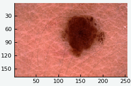
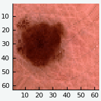

Getting Started
In this section we will provide a condensed overview of the package. In order to keep this overview concise, we will not discuss any background information or theory on the losses here in detail.
Installation
To install Augmentor.jl, start up Julia and type the following code-snipped into the REPL. It makes use of the native Julia package manger.
Pkg.add("Augmentor")Additionally, for example if you encounter any sudden issues, or in the case you would like to contribute to the package, you can manually choose to be on the latest (untagged) version.
Pkg.checkout("Augmentor")Example
The following code snippet shows how a stochastic augmentation pipeline can be specified using simple building blocks that we call "operations". In order to give the example some meaning, we will use a real medical image from the publicly available ISIC archive as input. The concrete image can be downloaded here using their Web API.
julia> using Augmentor, ISICArchive
julia> img = get(ImageThumbnailRequest(id = "5592ac599fc3c13155a57a85"))
169×256 Array{RGB{N0f8},2}:
[...]
julia> pl = Either(1=>FlipX(), 1=>FlipY(), 2=>NoOp()) |>
Rotate(0:360) |>
ShearX(-5:5) * ShearY(-5:5) |>
CropSize(165, 165) |>
Zoom(1:0.05:1.2) |>
Resize(64, 64)
6-step Augmentor.ImmutablePipeline:
1.) Either: (25%) Flip the X axis. (25%) Flip the Y axis. (50%) No operation.
2.) Rotate by θ ∈ 0:360 degree
3.) Either: (50%) ShearX by ϕ ∈ -5:5 degree. (50%) ShearY by ψ ∈ -5:5 degree.
4.) Crop a 165×165 window around the center
5.) Zoom by I ∈ {1.0×1.0, 1.05×1.05, 1.1×1.1, 1.15×1.15, 1.2×1.2}
6.) Resize to 64×64
julia> img_new = augment(img, pl)
64×64 Array{RGB{N0f8},2}:
[...]The function augment will generate a single augmented image from the given input image and pipeline. To visualize the effect we compiled a few resulting output images into a GIF using the plotting library Plots.jl with the PyPlot.jl back-end. You can inspect the full code by clicking on "Edit on Github" in the top right corner of this page.
Input (img) | Output (img_new) | |
|---|---|---|
|  | → |  |
Getting Help
To get help on specific functionality you can either look up the information here, or if you prefer you can make use of Julia's native doc-system. The following example shows how to get additional information on augment within Julia's REPL:
?augmentIf you find yourself stuck or have other questions concerning the package you can find us at gitter or the Machine Learning domain on discourse.julialang.org
If you encounter a bug or would like to participate in the development of this package come find us on Github.